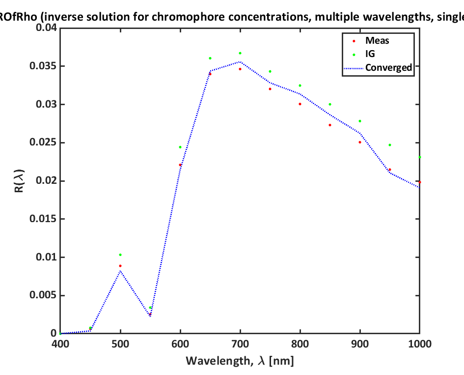
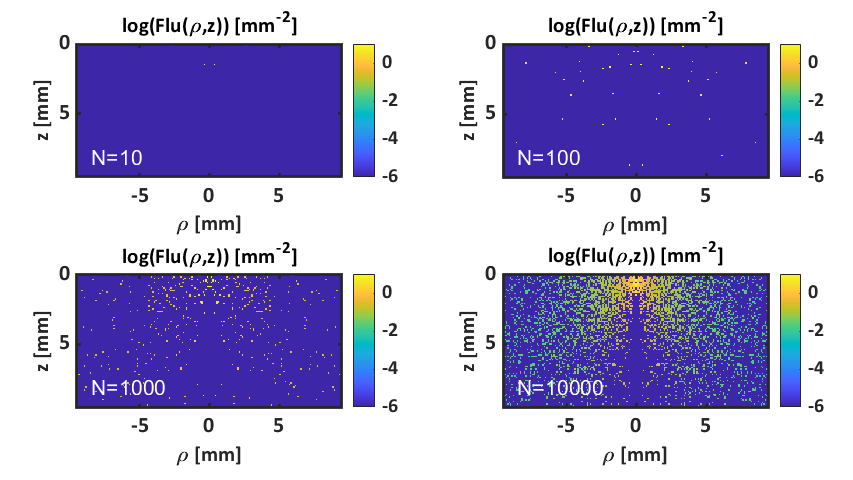
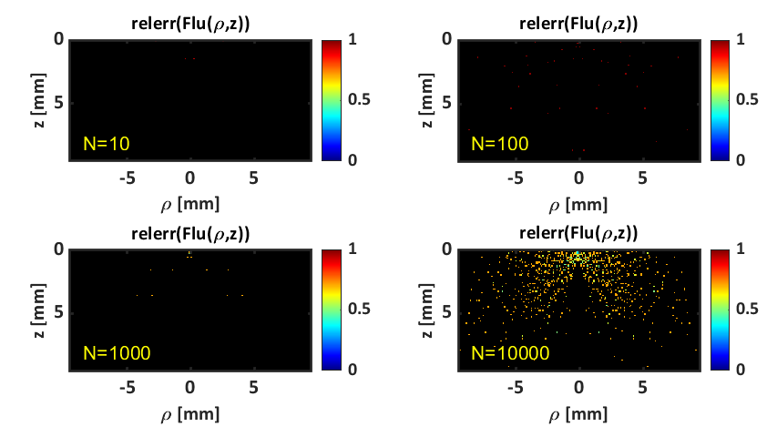
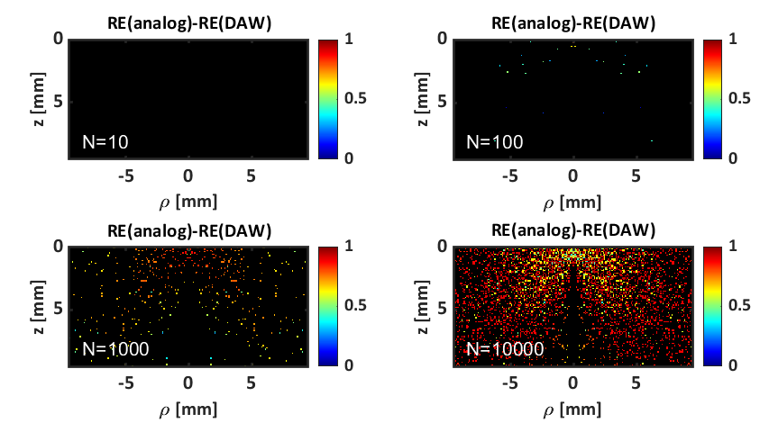
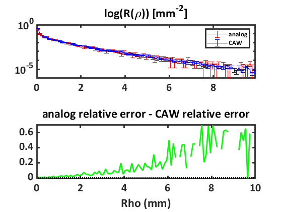
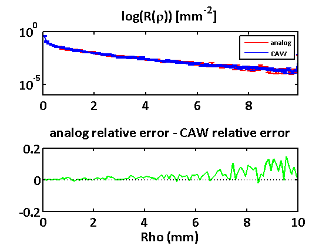

Monte Carlo Laboratory B,
Script for short course laboratory
Contents
- Example 1a: run Monte Carlo simulations for fluence with increasing N photons (Analog)
- Example 1a: run Monte Carlo simulations for fluence with increasing N photons (Discrete)
- Example 1b: Compare standard deviation of two absorption methods
- Example 2: run Monte Carlo simulations accounting for absorption with
Example 1a: run Monte Carlo simulations for fluence with increasing N photons (Analog)
Running simulations... Simulations complete! Run time: 3.0075 seconds 
Example 1a: run Monte Carlo simulations for fluence with increasing N photons (Discrete)
Running simulations... Simulations complete! Run time: 39.6564 seconds 
Example 1b: Compare standard deviation of two absorption methods
this cell relies on above cell execution
Example 2: run Monte Carlo simulations accounting for absorption with
analog and continuous absorption weighting with 10,000 photons and compare time and relative error
Analog results: Running simulation... Simulation complete! Run time: 1.7898 seconds Continuous absorption weighting results: Running simulation... Simulation complete! Run time: 35.8765 seconds